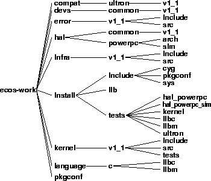

The build tree is the directory hierarchy in which all generated files are placed. Generated files consist of the makefile, the compiled object files and a dependency file (with a .d extension) for each source file. The header files that contain configuration data are copied into the build tree, and packages' exported header files are copied into the install tree.
Figure 5-2. build tree

The build tree is where all intermediate object files and copies of configuration header files are placed.
Recompiling can modify the object files. You can modify the configuration header files using the Configuration Tool or manually (see Chapter 8).
The header files with configuration data will be edited when the user wants to configure eCos manually.
User application source or binary code should not go in the build tree.
The header file with configuration data for the kernel.
The directory in which object files for the C library are built.